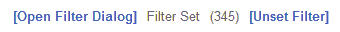
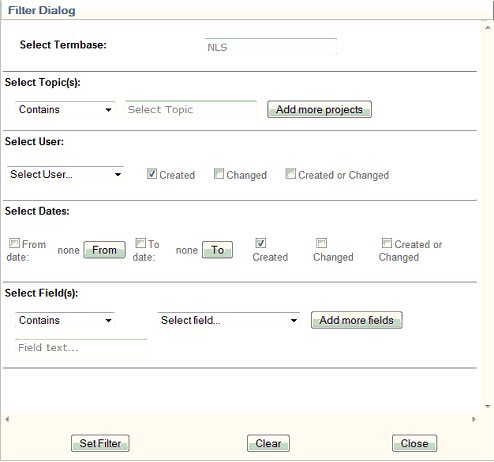
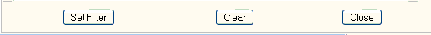

|
Filter Function
|
Previous Top Next |
The Filter Function can be used to specify a subset of records that must be available in the Termbrowser. Once a filter has been set, the browse controls will only browse and display the records that adhere to the filter restrictions. The search function too will only search for terms that are included in the filtered data.
The filter can be used to show:
· all the records that fall under a specific Termbase;
· all the records listed under a specific project or combination of projects;
· all the records that were created or edited by a specific user;
· all the records that were created or edited within a certain period;
· all the records that contain (or do not contain) certain fields;
· all the records that contain (or do not contain) fields with specific values.
These functionalities can be used separately or in combination to obtain a very specific subset of data.
The filter panel
The picture below shows the filter panel once a filter has been set:

· The label in the middle of the filter panel shows whether a filter has been set.
· The number shown in brackets to the right of the label above (here 345) indicates the number of records that adhere to the restrictions set in the filter.
· If a filter has been set, the Unset Filter link at the right-hand side of the filter panel will remove the filter from the Termbase and display all the records again.
· The Open Filter Dialog link at the left-hand side of the filter panel opens the Filter Dialog, where filters can be configured and applied to the Termbase.

In the Filter Dialog (shown above), the parameters of the filter can be specified. The Filter Dialog is divided into 6 sections, each of which controls a different aspect of the filter.
1. Select Termbase
Here you can select the Termbase to which the filtered records should belong. A list of all available Termbases will be displayed when you click on the text box.
2. Select Project(s)
The Select Project(s) panel is only shown once a Termbase has been selected in the Select Termbase section. Multiple projects can be added by clicking the Add more projects button. The link between the projects can be specified by checking either the AND or the OR check box.
3. Select User
A user can be selected using the drop-down list. Once you have selected a user, you need to check the appropriate check box to show the role of the user.
4. Select Dates
It is also possible to use the date on which a record was created or edited as a filtering feature. Select a date by clicking on the From or To button. This will open up a calendar on which the date can be selected. Enable the selected date(s) by selecting one or both of the From Date and To Date check boxes. Specify the role of the date by checking the Created, Changed or Created or Changed boxes.
5. Select Field(s)
You can select a field by selecting an item from the drop-down list. Specify whether the record should contain (or not contain) the selected field. You can also specify text that must be present in the field by entering this text into the Field text... box. A combination of fields can be entered by clicking the Add more fields button and specifying the AND or the OR relation.
If, for example, you want all the records that have a term in English and a definition for each term, then select the English field from the drop-down list, click the Add more fields button and specify it as an AND relationship. Then select Definition as the second field. Once the filter has been set, all the records that have an English term accompanied by a definition will appear in the Termbrowser.
6. Control Buttons

The selected filter configuration can be applied to the Termbase by clicking on the Set Filter button.
The Clear button removes the filter from the data and clears all selections from the Filter Dialog. All the selections will remain in the Filter Dialog until this button has been clicked. If the Filter Dialog is closed and later reopened, all the settings will have been retained.